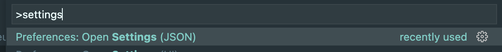
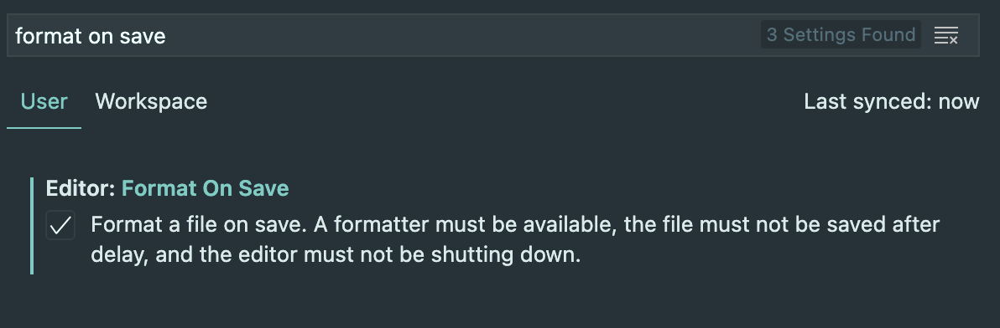

VSCode 에서 ESLint와 Prettier 설정방법
ESLint 와 Prettier 를 적용 후 VSCode에서 자동 저장이 되게 하기 위해서는 다음과 같이 코드를 추가해주면 됩니다.
Settings 파일을 직접 수정하는 방법
command + shift + P : Command Palette

1 | // VSCode > settings.json |
IDE에서 파일을 설정하는 방법
Preference > Settings (⌘ ,)

규칙 설정 방법
ESLint는 코드가 정의된 규칙과 일치하지 않을 때, 판별해주는 정적 코드 분석 도구입니다.
자동저장 시, 코드 스타일을 바꿔줄 수 있습니다.
문자열 배열의 경우에 쉼표 뒤에 아래로 한칸씩 떨어지는 스타일을 더 선호한다면, 규칙을 추가해서 사용하면 됩니다.
1 | // .eslintrc |
Prettier는 공통 스타일 가이드에 따라 더 이쁘게 표현하기 위한 코드 포맷터입니다.
1 | // .prettierrc |
대부분 2가지를 같이 사용하기에 일관성 있는 코드가 될 수 있게 자동 저장시에 반영될 수 있게 적용해서 사용하시길 바랍니다.